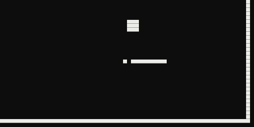
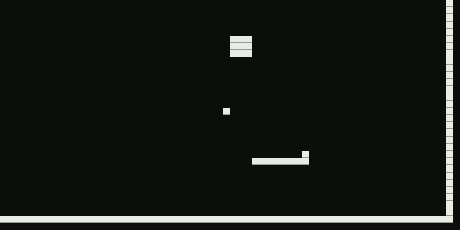
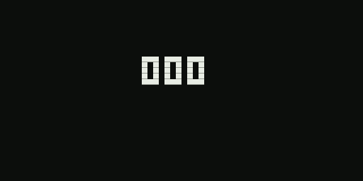

The Snake
R. Faint · DREAMER no. 3 (1980-11) p. 9 1K RAM



Guide a growing snake to the big square, worth 8 points per meal, while avoiding the walls, the small square and your own body. A short chime plays at the end if you scored enough. Two published patches slow the game down and move the controls to the 5/8/A/D diamond.
Keys
1 up, 4 left, 6 right, 9 down (redirected version: 5 up, 8 left, A right, D down); any key restarts.
Files
| File | Version | Load | Run |
|---|---|---|---|
| The Snake.d68 | main | 0080-03FF | C000 |
| The Snake (slow).d68 | slow | 0080-03FF | C000 |
| The Snake (redirected).d68 | redirected keys | 0080-03FF | C000 |
Listing as transcribed (with notes): the_snake.txt, the_snake_slow.txt, the_snake_redirected.txt
Source
DREAMER no. 3 on archive.org, p. 9 (PDF page 11). Author: R. Faint.
Corrections applied
- 'Slow' version: speed patch of issue 4 ('The Snake by the Tail', G.V. Samways): 0360 8F00 -> 8E00, 0364 80F0 -> 80E0, 0374 00EE -> 10F0 (low speed).
- 'Redirected' version: key patch of issue 8 ('Redirected Snake'): 023C 6006->600A, 024C 6B06->6B0A, 0252 6A01->6A05, 02F2 4001->4005, 0258 6A06->6A0A, 0272 4B06->4B0A, 02FE 4006->400A, 0264 6A04->6A08, 026A 4B04->4B08, 02F6 4004->4008, 025E 6A09->6A0D, 026E 4B09->4B0D, 02FA 4009->400D.
Open doubts
None.